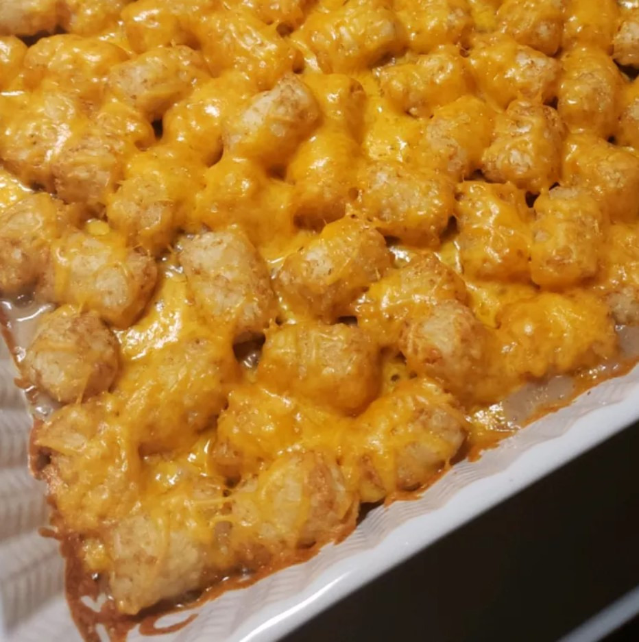

Tater Tot Casserole

A simple casserole with tater tots! It's great!
This Tater Tot casserole is a quick and easy dinner that everyone will love. Just four basic ingredients come together for this comforting dish.
This tater tot casserole recipe is quick, easy, and incredibly satisfying. Made with simple and cheap ingredients, it's sure to please everyone at your dinner table.
Tater Tot Casserole Ingredients
- Beef: This tater tot casserole starts with ground beef cooked until it's brown and crumbly.
- Canned soup: A can of condensed cream of mushroom soup adds richness, creaminess, and flavor.
- Seasonings: This casserole is simply seasoned with salt and black pepper.
- Tater tots: Of course, you'll need frozen tater tots!
- Cheese: Shred your own Cheddar cheese for the most delicious results.
Ingredients
- 1 pound ground beef
- 1 (10.5 ounce) can condensed cream of mushroom soup
- Salt and ground black pepper to taste
- 1 (16 ounce) package frozen tater tots
- 2 cups shredded Cheddar cheese
Steps
- Preheat the oven to 350 degrees F (175 degrees C).
- Heat a large skillet over medium-high heat. Cook and stir ground beef in the hot skillet until completely browned and crumbly, 7 to 10 minutes. Stir in condensed soup; season with salt and black pepper.
- Transfer beef mixture to a 9x13-inch baking dish; layer tater tots evenly on top and sprinkle with Cheddar cheese.
- Bake in the preheated oven until tater tots are golden brown and hot, 30 to 45 minutes.